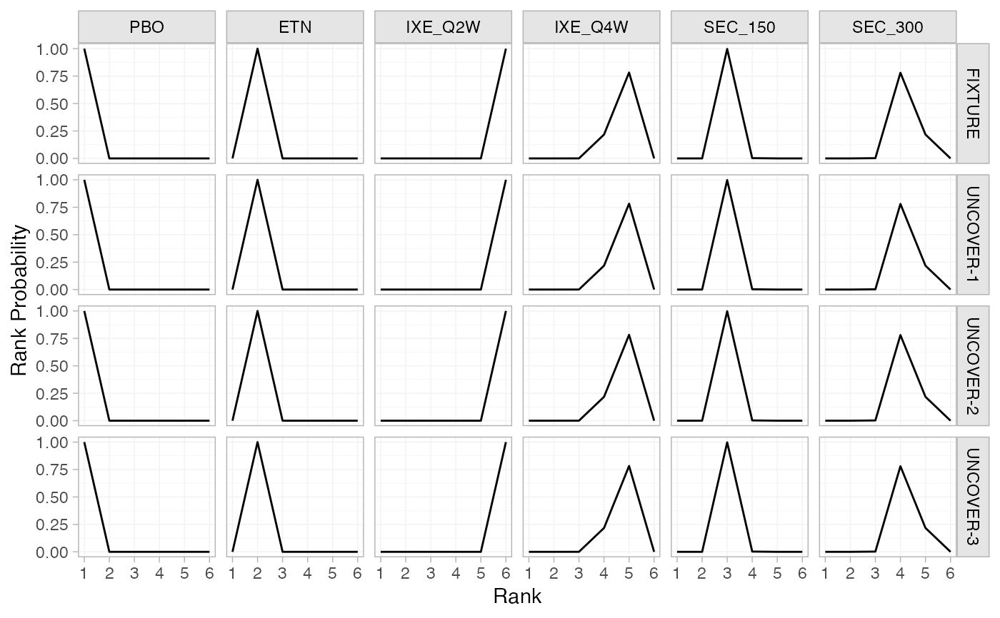
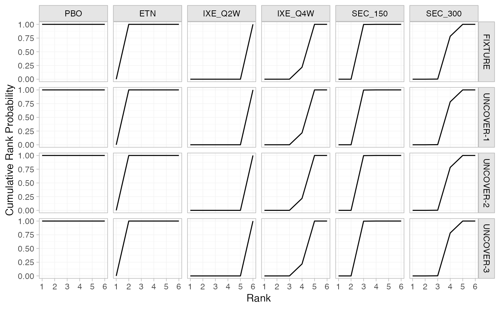

Produce posterior treatment rankings and rank probabilities from a fitted NMA model. When a meta-regression is fitted with effect modifier interactions with treatment, these will differ by study population.
posterior_ranks( x, newdata = NULL, study = NULL, lower_better = TRUE, probs = c(0.025, 0.25, 0.5, 0.75, 0.975), summary = TRUE ) posterior_rank_probs( x, newdata = NULL, study = NULL, lower_better = TRUE, cumulative = FALSE )
Arguments
| x | A |
|---|---|
| newdata | Only used if a regression model is fitted. A data frame of
study details, one row per study, giving the covariate values at which to
produce relative effects. Column names must match variables in the
regression model. If |
| study | Column of |
| lower_better | Logical, are lower treatment effects better ( |
| probs | Numeric vector of quantiles of interest to present in computed
summary, default |
| summary | Logical, calculate posterior summaries? Default |
| cumulative | Logical, return cumulative rank probabilities? Default is
|
Value
A nma_summary object if summary = TRUE, otherwise a list
containing a 3D MCMC array of samples and (for regression models) a data
frame of study information.
Details
The function posterior_ranks() produces posterior rankings, which
have a distribution (e.g. mean/median rank and 95% Credible Interval). The
function posterior_rank_probs() produces rank probabilities, which give
the posterior probabilities of being ranked first, second, etc. out of all
treatments.
The argument lower_better specifies whether lower treatment
effects or higher treatment effects are preferred. For example, with a
negative binary outcome lower (more negative) log odds ratios are
preferred, so lower_better = TRUE. Conversely, for example, if treatments
aim to increase the rate of a positive outcome then lower_better = FALSE.
See also
plot.nma_summary() for plotting the ranks and rank probabilities.
Examples
## Smoking cessation # \donttest{ # Run smoking RE NMA example if not already available if (!exists("smk_fit_RE")) example("example_smk_re") # } # \donttest{ # Produce posterior ranks smk_rank_RE <- posterior_ranks(smk_fit_RE, lower_better = FALSE) smk_rank_RE#> mean sd 2.5% 25% 50% 75% 97.5% Bulk_ESS Tail_ESS #> rank[No intervention] 3.89 0.33 3 4 4 4 4 2435 NA #> rank[Group counselling] 1.37 0.62 1 1 1 2 3 2920 2994 #> rank[Individual counselling] 1.93 0.63 1 2 2 2 3 2630 2407 #> rank[Self-help] 2.81 0.69 1 3 3 3 4 2584 NA #> Rhat #> rank[No intervention] 1 #> rank[Group counselling] 1 #> rank[Individual counselling] 1 #> rank[Self-help] 1# Produce rank probabilities smk_rankprob_RE <- posterior_rank_probs(smk_fit_RE, lower_better = FALSE) smk_rankprob_RE#> p_rank[1] p_rank[2] p_rank[3] p_rank[4] #> d[No intervention] 0.00 0.00 0.11 0.89 #> d[Group counselling] 0.71 0.22 0.07 0.00 #> d[Individual counselling] 0.23 0.60 0.16 0.00 #> d[Self-help] 0.06 0.18 0.66 0.11# Produce cumulative rank probabilities smk_cumrankprob_RE <- posterior_rank_probs(smk_fit_RE, lower_better = FALSE, cumulative = TRUE) smk_cumrankprob_RE#> p_rank[1] p_rank[2] p_rank[3] p_rank[4] #> d[No intervention] 0.00 0.00 0.11 1 #> d[Group counselling] 0.71 0.93 1.00 1 #> d[Individual counselling] 0.23 0.83 1.00 1 #> d[Self-help] 0.06 0.23 0.89 1# Further customisation is possible with ggplot commands plot(smk_cumrankprob_RE) + ggplot2::facet_null() + ggplot2::aes(colour = Treatment)# } ## Plaque psoriasis ML-NMR # \donttest{ # Run plaque psoriasis ML-NMR example if not already available if (!exists("pso_fit")) example("example_pso_mlnmr") # } # \donttest{ # Produce population-adjusted rankings for all study populations in # the network # Ranks pso_rank <- posterior_ranks(pso_fit) pso_rank#> ---------------------------------------------------------------- Study: FIXTURE ---- #> #> Covariate values: #> durnpso prevsys bsa weight psa #> 1.65 0.64 0.34 8.32 0.15 #> #> mean sd 2.5% 25% 50% 75% 97.5% Bulk_ESS Tail_ESS Rhat #> rank[FIXTURE: PBO] 1.00 0.00 1 1 1 1 1 NA NA NA #> rank[FIXTURE: ETN] 2.00 0.00 2 2 2 2 2 NA NA NA #> rank[FIXTURE: IXE_Q2W] 6.00 0.00 6 6 6 6 6 NA NA NA #> rank[FIXTURE: IXE_Q4W] 4.77 0.42 4 5 5 5 5 4177 NA 1 #> rank[FIXTURE: SEC_150] 3.00 0.04 3 3 3 3 3 4027 4027 1 #> rank[FIXTURE: SEC_300] 4.23 0.43 4 4 4 4 5 4176 NA 1 #> #> -------------------------------------------------------------- Study: UNCOVER-1 ---- #> #> Covariate values: #> durnpso prevsys bsa weight psa #> 2 0.73 0.28 9.24 0.28 #> #> mean sd 2.5% 25% 50% 75% 97.5% Bulk_ESS Tail_ESS #> rank[UNCOVER-1: PBO] 1.00 0.00 1 1 1 1 1 NA NA #> rank[UNCOVER-1: ETN] 2.00 0.00 2 2 2 2 2 NA NA #> rank[UNCOVER-1: IXE_Q2W] 6.00 0.00 6 6 6 6 6 NA NA #> rank[UNCOVER-1: IXE_Q4W] 4.77 0.42 4 5 5 5 5 4177 NA #> rank[UNCOVER-1: SEC_150] 3.00 0.04 3 3 3 3 3 4027 4027 #> rank[UNCOVER-1: SEC_300] 4.23 0.43 4 4 4 4 5 4176 NA #> Rhat #> rank[UNCOVER-1: PBO] NA #> rank[UNCOVER-1: ETN] NA #> rank[UNCOVER-1: IXE_Q2W] NA #> rank[UNCOVER-1: IXE_Q4W] 1 #> rank[UNCOVER-1: SEC_150] 1 #> rank[UNCOVER-1: SEC_300] 1 #> #> -------------------------------------------------------------- Study: UNCOVER-2 ---- #> #> Covariate values: #> durnpso prevsys bsa weight psa #> 1.87 0.64 0.27 9.17 0.24 #> #> mean sd 2.5% 25% 50% 75% 97.5% Bulk_ESS Tail_ESS #> rank[UNCOVER-2: PBO] 1.00 0.00 1 1 1 1 1 NA NA #> rank[UNCOVER-2: ETN] 2.00 0.00 2 2 2 2 2 NA NA #> rank[UNCOVER-2: IXE_Q2W] 6.00 0.00 6 6 6 6 6 NA NA #> rank[UNCOVER-2: IXE_Q4W] 4.77 0.42 4 5 5 5 5 4177 NA #> rank[UNCOVER-2: SEC_150] 3.00 0.04 3 3 3 3 3 4027 4027 #> rank[UNCOVER-2: SEC_300] 4.23 0.43 4 4 4 4 5 4176 NA #> Rhat #> rank[UNCOVER-2: PBO] NA #> rank[UNCOVER-2: ETN] NA #> rank[UNCOVER-2: IXE_Q2W] NA #> rank[UNCOVER-2: IXE_Q4W] 1 #> rank[UNCOVER-2: SEC_150] 1 #> rank[UNCOVER-2: SEC_300] 1 #> #> -------------------------------------------------------------- Study: UNCOVER-3 ---- #> #> Covariate values: #> durnpso prevsys bsa weight psa #> 1.78 0.59 0.28 9.01 0.2 #> #> mean sd 2.5% 25% 50% 75% 97.5% Bulk_ESS Tail_ESS #> rank[UNCOVER-3: PBO] 1.00 0.00 1 1 1 1 1 NA NA #> rank[UNCOVER-3: ETN] 2.00 0.00 2 2 2 2 2 NA NA #> rank[UNCOVER-3: IXE_Q2W] 6.00 0.00 6 6 6 6 6 NA NA #> rank[UNCOVER-3: IXE_Q4W] 4.77 0.42 4 5 5 5 5 4177 NA #> rank[UNCOVER-3: SEC_150] 3.00 0.04 3 3 3 3 3 4027 4027 #> rank[UNCOVER-3: SEC_300] 4.23 0.43 4 4 4 4 5 4176 NA #> Rhat #> rank[UNCOVER-3: PBO] NA #> rank[UNCOVER-3: ETN] NA #> rank[UNCOVER-3: IXE_Q2W] NA #> rank[UNCOVER-3: IXE_Q4W] 1 #> rank[UNCOVER-3: SEC_150] 1 #> rank[UNCOVER-3: SEC_300] 1 #># Rank probabilities pso_rankprobs <- posterior_rank_probs(pso_fit) pso_rankprobs#> ---------------------------------------------------------------- Study: FIXTURE ---- #> #> Covariate values: #> durnpso prevsys bsa weight psa #> 1.65 0.64 0.34 8.32 0.15 #> #> p_rank[1] p_rank[2] p_rank[3] p_rank[4] p_rank[5] p_rank[6] #> d[FIXTURE: PBO] 1 0 0 0.00 0.00 0 #> d[FIXTURE: ETN] 0 1 0 0.00 0.00 0 #> d[FIXTURE: IXE_Q2W] 0 0 0 0.00 0.00 1 #> d[FIXTURE: IXE_Q4W] 0 0 0 0.23 0.77 0 #> d[FIXTURE: SEC_150] 0 0 1 0.00 0.00 0 #> d[FIXTURE: SEC_300] 0 0 0 0.76 0.23 0 #> #> -------------------------------------------------------------- Study: UNCOVER-1 ---- #> #> Covariate values: #> durnpso prevsys bsa weight psa #> 2 0.73 0.28 9.24 0.28 #> #> p_rank[1] p_rank[2] p_rank[3] p_rank[4] p_rank[5] #> d[UNCOVER-1: PBO] 1 0 0 0.00 0.00 #> d[UNCOVER-1: ETN] 0 1 0 0.00 0.00 #> d[UNCOVER-1: IXE_Q2W] 0 0 0 0.00 0.00 #> d[UNCOVER-1: IXE_Q4W] 0 0 0 0.23 0.77 #> d[UNCOVER-1: SEC_150] 0 0 1 0.00 0.00 #> d[UNCOVER-1: SEC_300] 0 0 0 0.76 0.23 #> p_rank[6] #> d[UNCOVER-1: PBO] 0 #> d[UNCOVER-1: ETN] 0 #> d[UNCOVER-1: IXE_Q2W] 1 #> d[UNCOVER-1: IXE_Q4W] 0 #> d[UNCOVER-1: SEC_150] 0 #> d[UNCOVER-1: SEC_300] 0 #> #> -------------------------------------------------------------- Study: UNCOVER-2 ---- #> #> Covariate values: #> durnpso prevsys bsa weight psa #> 1.87 0.64 0.27 9.17 0.24 #> #> p_rank[1] p_rank[2] p_rank[3] p_rank[4] p_rank[5] #> d[UNCOVER-2: PBO] 1 0 0 0.00 0.00 #> d[UNCOVER-2: ETN] 0 1 0 0.00 0.00 #> d[UNCOVER-2: IXE_Q2W] 0 0 0 0.00 0.00 #> d[UNCOVER-2: IXE_Q4W] 0 0 0 0.23 0.77 #> d[UNCOVER-2: SEC_150] 0 0 1 0.00 0.00 #> d[UNCOVER-2: SEC_300] 0 0 0 0.76 0.23 #> p_rank[6] #> d[UNCOVER-2: PBO] 0 #> d[UNCOVER-2: ETN] 0 #> d[UNCOVER-2: IXE_Q2W] 1 #> d[UNCOVER-2: IXE_Q4W] 0 #> d[UNCOVER-2: SEC_150] 0 #> d[UNCOVER-2: SEC_300] 0 #> #> -------------------------------------------------------------- Study: UNCOVER-3 ---- #> #> Covariate values: #> durnpso prevsys bsa weight psa #> 1.78 0.59 0.28 9.01 0.2 #> #> p_rank[1] p_rank[2] p_rank[3] p_rank[4] p_rank[5] #> d[UNCOVER-3: PBO] 1 0 0 0.00 0.00 #> d[UNCOVER-3: ETN] 0 1 0 0.00 0.00 #> d[UNCOVER-3: IXE_Q2W] 0 0 0 0.00 0.00 #> d[UNCOVER-3: IXE_Q4W] 0 0 0 0.23 0.77 #> d[UNCOVER-3: SEC_150] 0 0 1 0.00 0.00 #> d[UNCOVER-3: SEC_300] 0 0 0 0.76 0.23 #> p_rank[6] #> d[UNCOVER-3: PBO] 0 #> d[UNCOVER-3: ETN] 0 #> d[UNCOVER-3: IXE_Q2W] 1 #> d[UNCOVER-3: IXE_Q4W] 0 #> d[UNCOVER-3: SEC_150] 0 #> d[UNCOVER-3: SEC_300] 0 #># Cumulative rank probabilities pso_cumrankprobs <- posterior_rank_probs(pso_fit, cumulative = TRUE) pso_cumrankprobs#> ---------------------------------------------------------------- Study: FIXTURE ---- #> #> Covariate values: #> durnpso prevsys bsa weight psa #> 1.65 0.64 0.34 8.32 0.15 #> #> p_rank[1] p_rank[2] p_rank[3] p_rank[4] p_rank[5] p_rank[6] #> d[FIXTURE: PBO] 1 1 1 1.00 1 1 #> d[FIXTURE: ETN] 0 1 1 1.00 1 1 #> d[FIXTURE: IXE_Q2W] 0 0 0 0.00 0 1 #> d[FIXTURE: IXE_Q4W] 0 0 0 0.23 1 1 #> d[FIXTURE: SEC_150] 0 0 1 1.00 1 1 #> d[FIXTURE: SEC_300] 0 0 0 0.77 1 1 #> #> -------------------------------------------------------------- Study: UNCOVER-1 ---- #> #> Covariate values: #> durnpso prevsys bsa weight psa #> 2 0.73 0.28 9.24 0.28 #> #> p_rank[1] p_rank[2] p_rank[3] p_rank[4] p_rank[5] #> d[UNCOVER-1: PBO] 1 1 1 1.00 1 #> d[UNCOVER-1: ETN] 0 1 1 1.00 1 #> d[UNCOVER-1: IXE_Q2W] 0 0 0 0.00 0 #> d[UNCOVER-1: IXE_Q4W] 0 0 0 0.23 1 #> d[UNCOVER-1: SEC_150] 0 0 1 1.00 1 #> d[UNCOVER-1: SEC_300] 0 0 0 0.77 1 #> p_rank[6] #> d[UNCOVER-1: PBO] 1 #> d[UNCOVER-1: ETN] 1 #> d[UNCOVER-1: IXE_Q2W] 1 #> d[UNCOVER-1: IXE_Q4W] 1 #> d[UNCOVER-1: SEC_150] 1 #> d[UNCOVER-1: SEC_300] 1 #> #> -------------------------------------------------------------- Study: UNCOVER-2 ---- #> #> Covariate values: #> durnpso prevsys bsa weight psa #> 1.87 0.64 0.27 9.17 0.24 #> #> p_rank[1] p_rank[2] p_rank[3] p_rank[4] p_rank[5] #> d[UNCOVER-2: PBO] 1 1 1 1.00 1 #> d[UNCOVER-2: ETN] 0 1 1 1.00 1 #> d[UNCOVER-2: IXE_Q2W] 0 0 0 0.00 0 #> d[UNCOVER-2: IXE_Q4W] 0 0 0 0.23 1 #> d[UNCOVER-2: SEC_150] 0 0 1 1.00 1 #> d[UNCOVER-2: SEC_300] 0 0 0 0.77 1 #> p_rank[6] #> d[UNCOVER-2: PBO] 1 #> d[UNCOVER-2: ETN] 1 #> d[UNCOVER-2: IXE_Q2W] 1 #> d[UNCOVER-2: IXE_Q4W] 1 #> d[UNCOVER-2: SEC_150] 1 #> d[UNCOVER-2: SEC_300] 1 #> #> -------------------------------------------------------------- Study: UNCOVER-3 ---- #> #> Covariate values: #> durnpso prevsys bsa weight psa #> 1.78 0.59 0.28 9.01 0.2 #> #> p_rank[1] p_rank[2] p_rank[3] p_rank[4] p_rank[5] #> d[UNCOVER-3: PBO] 1 1 1 1.00 1 #> d[UNCOVER-3: ETN] 0 1 1 1.00 1 #> d[UNCOVER-3: IXE_Q2W] 0 0 0 0.00 0 #> d[UNCOVER-3: IXE_Q4W] 0 0 0 0.23 1 #> d[UNCOVER-3: SEC_150] 0 0 1 1.00 1 #> d[UNCOVER-3: SEC_300] 0 0 0 0.77 1 #> p_rank[6] #> d[UNCOVER-3: PBO] 1 #> d[UNCOVER-3: ETN] 1 #> d[UNCOVER-3: IXE_Q2W] 1 #> d[UNCOVER-3: IXE_Q4W] 1 #> d[UNCOVER-3: SEC_150] 1 #> d[UNCOVER-3: SEC_300] 1 #># Produce population-adjusted rankings for a different target # population new_agd_means <- data.frame( bsa = 0.6, prevsys = 0.1, psa = 0.2, weight = 10, durnpso = 3) # Ranks posterior_ranks(pso_fit, newdata = new_agd_means)#> ------------------------------------------------------------------ Study: New 1 ---- #> #> Covariate values: #> durnpso prevsys bsa weight psa #> 3 0.1 0.6 10 0.2 #> #> mean sd 2.5% 25% 50% 75% 97.5% Bulk_ESS Tail_ESS Rhat #> rank[New 1: PBO] 1.00 0.00 1 1 1 1 1 NA NA NA #> rank[New 1: ETN] 2.00 0.00 2 2 2 2 2 NA NA NA #> rank[New 1: IXE_Q2W] 6.00 0.00 6 6 6 6 6 NA NA NA #> rank[New 1: IXE_Q4W] 4.77 0.42 4 5 5 5 5 4177 NA 1 #> rank[New 1: SEC_150] 3.00 0.04 3 3 3 3 3 4027 4027 1 #> rank[New 1: SEC_300] 4.23 0.43 4 4 4 4 5 4176 NA 1 #># Rank probabilities posterior_rank_probs(pso_fit, newdata = new_agd_means)#> ------------------------------------------------------------------ Study: New 1 ---- #> #> Covariate values: #> durnpso prevsys bsa weight psa #> 3 0.1 0.6 10 0.2 #> #> p_rank[1] p_rank[2] p_rank[3] p_rank[4] p_rank[5] p_rank[6] #> d[New 1: PBO] 1 0 0 0.00 0.00 0 #> d[New 1: ETN] 0 1 0 0.00 0.00 0 #> d[New 1: IXE_Q2W] 0 0 0 0.00 0.00 1 #> d[New 1: IXE_Q4W] 0 0 0 0.23 0.77 0 #> d[New 1: SEC_150] 0 0 1 0.00 0.00 0 #> d[New 1: SEC_300] 0 0 0 0.76 0.23 0 #># Cumulative rank probabilities posterior_rank_probs(pso_fit, newdata = new_agd_means, cumulative = TRUE)#> ------------------------------------------------------------------ Study: New 1 ---- #> #> Covariate values: #> durnpso prevsys bsa weight psa #> 3 0.1 0.6 10 0.2 #> #> p_rank[1] p_rank[2] p_rank[3] p_rank[4] p_rank[5] p_rank[6] #> d[New 1: PBO] 1 1 1 1.00 1 1 #> d[New 1: ETN] 0 1 1 1.00 1 1 #> d[New 1: IXE_Q2W] 0 0 0 0.00 0 1 #> d[New 1: IXE_Q4W] 0 0 0 0.23 1 1 #> d[New 1: SEC_150] 0 0 1 1.00 1 1 #> d[New 1: SEC_300] 0 0 0 0.77 1 1 #># }